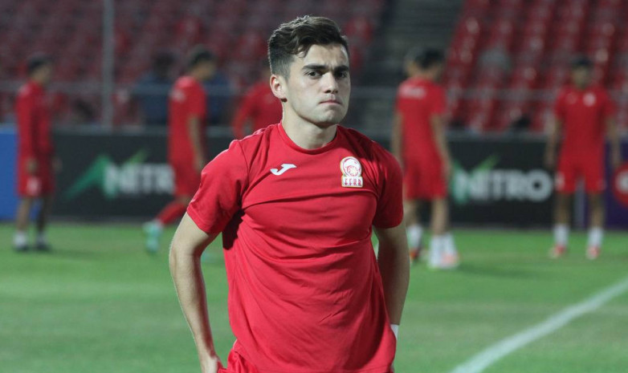
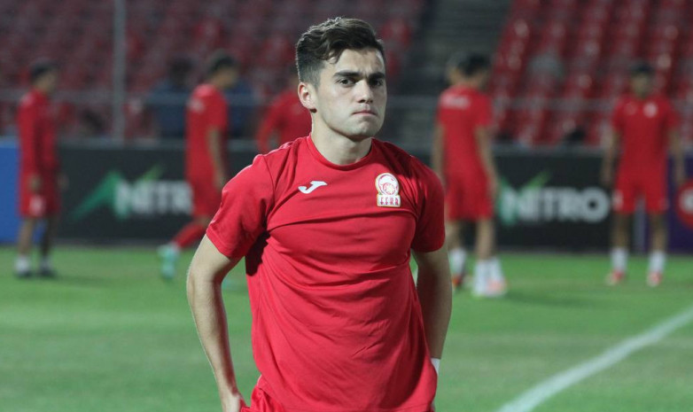

Эрбол Атабаев
Футболом начал заниматься в возрасте 5 лет в родном городе в системе местного клуба «Абдыш-Ата». С 9 до 11 лет был в школе казанского «Рубина», для поступления в которую, по словам его отца, был вынужден получить российское гражданство. В 2012 году прошёл отбор в кантеру «Барселоны», а после её окончания продолжил футбольное образование в юношеских командах «Оспиталета», «Гавы», «Кастельдефельса»en, «Спортивной ассоциации Жузепа Марии Жене» и «Гранольерса».
Гулжигит Алыкулов
Гулжигит Алыкулов (2000), вингер, «Неман» (Гродно, Беларусь)
На стыке юношеского и взрослого футбола этот одаренный игрок пробовал свои силы в турецком «Антальяспоре», однако, не сумев там закрепиться, вернулся в родную страну, откуда и отправился впоследствии покорять футбольную Беларусь. Пока у Гулжигита это получается довольно неплохо - прессу в этой стране он имеет хорошую. Контракт с «Неманом» действует до конца 2021 года, так что бесплатно Алыкулова забрать не удастся.
Оценка Transfermarkt: 200 тысяч евро
Валерий Кичин
 Валерий Кичин (1992), левый защитник, «Динамо» (Минск, Беларусь)
Этот футболист давно уже ищет футбольного счастья за пределами родного государства. У Валерия имеется немалый опыт выступлений за ряд российских клубов (в том числе и на уровне РПЛ - в составах нижегородской «Волги» и «Енисея»), а летом завершающегося года Кичин перешел в качестве свободного агента в минское «Динамо», где находится далеко не на последних ролях. Данный защитник мог бы стать очень неплохим приобретением для многих клубов КПЛ. Но поедет ли обратно на восток?..
Оценка Transfermarkt: 1 500 000 евро
Валерий Кичин (1992), левый защитник, «Динамо» (Минск, Беларусь)
Этот футболист давно уже ищет футбольного счастья за пределами родного государства. У Валерия имеется немалый опыт выступлений за ряд российских клубов (в том числе и на уровне РПЛ - в составах нижегородской «Волги» и «Енисея»), а летом завершающегося года Кичин перешел в качестве свободного агента в минское «Динамо», где находится далеко не на последних ролях. Данный защитник мог бы стать очень неплохим приобретением для многих клубов КПЛ. Но поедет ли обратно на восток?..
Оценка Transfermarkt: 1 500 000 евро
Валерий Кичин (1992), левый защитник, «Динамо» (Минск, Беларусь)
Этот футболист давно уже ищет футбольного счастья за пределами родного государства. У Валерия имеется немалый опыт выступлений за ряд российских клубов (в том числе и на уровне РПЛ - в составах нижегородской «Волги» и «Енисея»), а летом завершающегося года Кичин перешел в качестве свободного агента в минское «Динамо», где находится далеко не на последних ролях. Данный защитник мог бы стать очень неплохим приобретением для многих клубов КПЛ. Но поедет ли обратно на восток?..
Оценка Transfermarkt: 1 500 000 евро Алимардон Шукуров
Алимардон Шукуров (1999), центральный полузащитник, «Болуспор» (Болу, Турция)
Уроженец Чуйской области Кыргызстана обещает вырасти в достаточно крепкого игрока центра поля. Дебютировав в национальной сборной своей страны в 18-летнем возрасте, Алимардон является сейчас самым молодым автором дубля в ее истории. На данный момент игрок выступает 1 Лиге чемпионата Турции - втором по силе дивизионе главного национального турнира этого государства. Появляется на поле пока нечасто, но, все же, - это уже что-то.
Оценка Transfermarkt: 50 тысяч евро
Виталий Люкс
Виталий Люкс (1989), нападающий, «Ульм 1846» (Ульм, Германия)
Появившийся на свет в Кара-Балте форвард, футбольное образование получавший на исторической родине, первой сборной Кыргызстана пришелся весьма ко двору. Воспитанник немецкого футбола быстро стал одним из лидеров национальной команды, забив в ее составе ряд важных мячей. Вопрос, потянет ли сегодня 30-летний игрок уровень КПЛ, но командам, борющимся за выход в Премьер-Лигу чемпионата Казахстана, наверное, мог бы пригодиться.
Оценка Transfermarkt: 100 тысяч евро